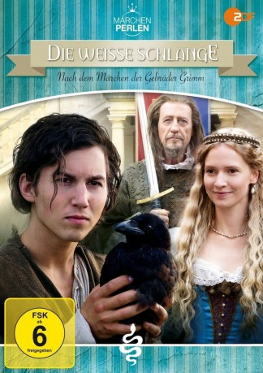

#12217 Die Weiße Schlange
Alternativ: The White Snake (Englischer Titel)
 
 IMDB-Wertung: 6.2 / 10
IMDB-Wertung: 6.2 / 10  Metascore: 0
Metascore: 0 
Ein mächtiger König lässt sich jeden Tag von seinem jungen, neu an den Hof gekommenen, Diener Endres eine goldene Schüssel servieren, deren Inhalt keiner kennt. Endres hält sich an das Verbot, obwohl ihn die neugierige Prinzessin anstachelt, einen Blick in die Schüssel zu werfen. Eines Tages entdeckt Endres ein Geheimnis des Königs: Er kann mit Tieren sprechen. Wenig später wird Endres beschuldigt, den Ring der Königin gestohlen zu haben. Sein Leben hängt an einem seidenen Faden. Nun bleibt Endres nur noch eine Chance: Er muss das Geheimnis der Schüssel lüften.
Jahr: 2015
Dauer: 90 Minuten
FSK: 6
Land: Deutschland Studio: ZDFneoTonspuren:
Untertitel:
Auflösung: 720p (1280x716) Größe: 2027 MB
Genre: Drama, Fantasy, Familie, Liebe
Regisseur: Stefan Bühling
Drehbuch: Jacob Grimm, Wilhelm Grimm, Max Honert, Jörg Menke-Peitzmeyer
Soundtrack: Stefan Maria Schneider
Darsteller:
 Tim Oliver Schultz als Endres
Tim Oliver Schultz als Endres Reiner Schöne als König Konrad
Reiner Schöne als König Konrad- Dominik Raneburger als Arnold
 Erwin Leder als Friedrich
Erwin Leder als Friedrich- Wolfgang S. Zechmayer als Hofmarschall
 Katy Karrenbauer als Weiße Schlange
Katy Karrenbauer als Weiße Schlange Ingo Naujoks als Pferd Phönix
Ingo Naujoks als Pferd Phönix- Anna Gamburg als
- Frida-Lovisa Hamann als Prinzessin Leonora
- Jutta Fastian als Königin Beatrix
- Heinz Trixner als Diener Heinrich
- Roland Silbernagl als Endres Vater
- Katinka Auberger als Endres Mutter
- Sascha Titel als Wache
- Karim Chaabi als Scherge 1
- Sandro Julianó als Scherge 2
- Jan Nikolaus Cerha als Graf Lorenz
- Rainer Frieb als Graf Emrich
- Laura Antonella Rauch als Zofe
- Moritz Uhl als Endres Bruder
- Johannes Büchs als
- Sven Gerhardt als
- Klaus Lochthove als
- Marion Musiol als
- Anja Rybiczka als
- Christoph Bittenauer als Wache (uncredited)
Datei: X:\Märchen\Weiße Schlange, Die (2015, FSK6, 1280x716).mkv seit 30.12.2019
Festplatte: Kinder-Filme+Trick
 Es gibt insgesamt 61 Filme in der Gruppe 'Märchen'
Es gibt insgesamt 61 Filme in der Gruppe 'Märchen'